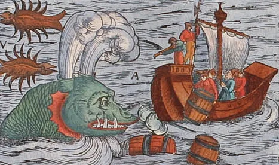

Carte de l'Europe
Explore les 47 pays d'Europe, leurs capitales et leurs drapeaux.
- 47 pays
- Capitales
- Drapeaux
Explorez le monde de manière interactive
Découvre les pays d'Europe, les cantons suisses et les départements français.
Zoome dans la carte, passe d'une région à sa voisine et ouvre sa fiche, avec son drapeau et ses chiffres. Puis relève le défi : chaque erreur est corrigée sur la carte.
Explore les 47 pays d'Europe, leurs capitales et leurs drapeaux.
Découvre les 26 cantons, leurs chefs-lieux et leurs drapeaux.
Parcours les 96 départements de métropole, leurs numéros et leurs préfectures.
Les continents et les pays du monde entier arrivent bientôt.

Zoome à la molette, en pinçant ou avec les boutons, et glisse d'une région à l'autre. Les noms apparaissent quand on s'approche, la mini-carte montre où tu es.

Chaque région a sa fiche : capitale, population, superficie, langues et voisins. Un clic sur un voisin t'y emmène directement.

Retrouve les régions sur la carte muette : trois essais par question, puis la carte montre la réponse. Gagne jusqu'à trois étoiles et rejoue tes erreurs.
Conçu par un enseignant, pour le tableau interactif comme pour la tablette de chaque élève.